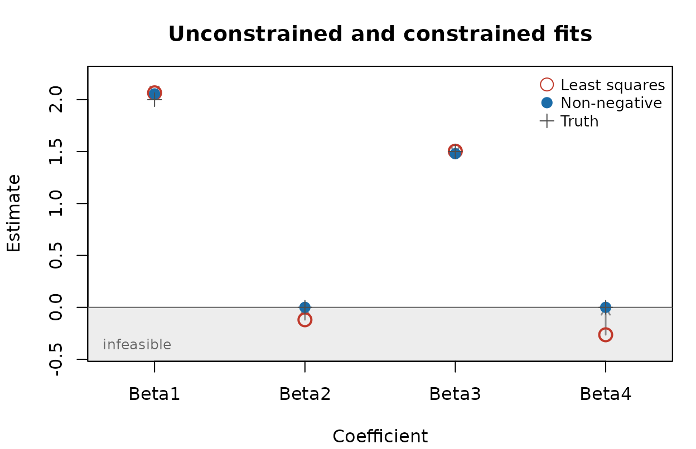

Constrained Optimization with Non-Negative Least Squares
James Joseph Balamuta
Source:vignettes/constrained-optimization.Rmd
constrained-optimization.RmdAbstract
In this vignette we fit a least squares regression whose
coefficients are required to be non-negative. The constraint is
what changes the C++ side: the objective class grows three member
functions beyond the Evaluate() and
Gradient() pair, and the optimizer that reads them
solves a sequence of penalized problems. We work through the sign
convention ensmallen uses for a bound, check the fit
against optim(method = "L-BFGS-B", lower = 0), and
show what happens when the convention is written backwards.
Overview
The linear regression vignette minimizes the residual sum of squares over every coefficient vector in . This vignette minimizes the same objective over the part of where no coefficient is negative. That is the fit to use when a coefficient stands for a quantity that cannot be negative, such as a mixing proportion, a dose, or a count of photons contributed by one source.
Adding that restriction changes the C++ rather than the mathematics
of the loss. The class that carried Evaluate() and
Gradient() now has to describe the feasible region as well,
through three more member functions. The optimizer reading them works
differently from L-BFGS, minimizing a sequence of unconstrained problems
in which a violated constraint costs more each round.
The C++ below is a fragment of one file, which is included in the
package as src/example-nnls-constrained.cpp and compiled
into it as nnls_auglag(). Because compiling C++ is slow,
this vignette displays the source without rebuilding it and calls the
precompiled function to produce the numbers.
The problem
The design matrix is , the coefficient vector is , and the response is continuous. The objective is the residual sum of squares, unchanged from the linear regression vignette:
What is added is a restriction on where may lie:
Every column of carries one bound, so there are constraints. No intercept column belongs in here, since including one would constrain the intercept along with the rest.
Setting the gradient to zero solves the unconstrained problem in closed form and gives the ordinary least squares fit, which ignores the bounds. Nothing stops it from returning negative coefficients when the columns responsible are weak or correlated, and the data below is built so that it does.
The constrained function contract
ensmallen sorts objectives by which member functions
they define. A constrained
function is a differentiable function plus a description of the
feasible region:
| Member function | Purpose |
|---|---|
Evaluate(beta) |
The objective at beta, ignoring the constraints |
Gradient(beta, g) |
The gradient of that objective |
NumConstraints() |
How many constraints there are |
EvaluateConstraint(i, beta) |
The value of constraint i at beta
|
GradientConstraint(i, beta, g) |
The gradient of constraint i
|
The first two are the pair the logistic regression vignette writes,
and they describe the objective alone. The last three describe the
region one constraint at a time. The index i runs from 0 to
NumConstraints() - 1, and the optimizer asks for one
constraint per call rather than for the whole vector at once.
The sign convention
ens::AugLagrangian treats every constraint as an
equality,
.
For each constraint it adds
to the objective, with a multiplier and a penalty parameter that the optimizer maintains. Nothing in that expression clamps , so a non-zero value of either sign is charged for.
An inequality therefore has to be written by hand as a residual that is exactly zero on the feasible side of the boundary. For a lower bound of zero:
which is
when
and equal to
,
a negative number, when it is not. Feasible points cost nothing and
infeasible ones cost more the further out they are.
ensmallen uses this same encoding for the inequality in its
own GockenbachFunction, in
inst/include/ensmallen_bits/problems/aug_lagrangian_test_functions_impl.hpp.
The clamp records the direction of the bound, and it is the one part of the constraint that cannot be inferred from anything else. Writing it backwards states the opposite bound, and the compiler says nothing.
Differentiating the clamped residual gives the constraint gradient, the -th standard basis vector where the bound is violated and zero where it is satisfied:
The augmented Lagrangian
ens::AugLagrangian
folds the constraints into the objective and hands the result to L-BFGS.
The function it actually minimizes is
whose gradient is assembled from the two gradients the class supplies:
Between them the two expressions use every member function of the
table. Evaluate() and Gradient() supply the
leading term, NumConstraints() gives the range of the sum,
and EvaluateConstraint() and
GradientConstraint() supply the terms inside it.
Between rounds the optimizer measures
and does one of two things. If that penalty has fallen far enough, the
multipliers move,
,
and the bar for the next round is set at a quarter of the current
penalty. If it has not,
is multiplied by ten and the same problem is solved again with
violations costing more. The multipliers start at zero and
starts at ten. The factors of a quarter and ten are the defaults
ens::AugLagrangian takes from Burer and Monteiro (2002),
and both are constructor arguments.
Because the bound is enforced by a penalty rather than by projection, a coefficient resting on the boundary comes back as a number near zero rather than as exactly zero. It can land on either side of the bound. Round the result before comparing it with zero.
The class
Every standalone file using RcppEnsmallen opens with the
same two lines. The attribute tells Rcpp::sourceCpp() where
to find the headers.
The five member functions of the table appear below in the same order.
// Define a constrained objective function. On top of the Evaluate() and
// Gradient() pair that a differentiable function supplies, the constrained
// contract adds NumConstraints(), EvaluateConstraint() and
// GradientConstraint().
class NonNegativeLeastSquaresFunction
{
public:
// Construct the object with the given design matrix and responses.
NonNegativeLeastSquaresFunction(const arma::mat& X, const arma::vec& y) :
X(X), y(y) { }
// Return the residual sum of squares for coefficients beta.
double Evaluate(const arma::mat& beta)
{
const arma::vec r = y - X * beta;
return arma::dot(r, r);
}
// Compute the gradient of the residual sum of squares.
void Gradient(const arma::mat& beta, arma::mat& g)
{
g = -2.0 * X.t() * (y - X * beta);
}
// One constraint per coefficient, each one a lower bound of zero.
size_t NumConstraints() const { return X.n_cols; }
// Return the residual of constraint i, which is zero when beta_i is
// non-negative and equal to beta_i when it is not.
//
// ensmallen only ever passes an index below NumConstraints(). The bounds
// test guards against a caller that reuses this class directly, since
// beta(i, 0) is unchecked once NDEBUG is set.
double EvaluateConstraint(const size_t i, const arma::mat& beta)
{
if (i >= X.n_cols) return 0.0;
return std::min(0.0, beta(i, 0));
}
// Compute the gradient of constraint i, the derivative of the clamped
// residual returned above.
void GradientConstraint(const size_t i, const arma::mat& beta,
arma::mat& g)
{
g.zeros(beta.n_rows, beta.n_cols);
if (i < X.n_cols && beta(i, 0) < 0.0) g(i, 0) = 1.0;
}
private:
// The design matrix.
const arma::mat& X;
// The responses to each data point.
const arma::vec& y;
};GradientConstraint() writes into g and
returns nothing, the way Gradient() does, and it has to
clear g first. The optimizer reuses one matrix across all
calls, so an entry left behind by constraint
would be read as part of constraint
.
Clamping it to match EvaluateConstraint() keeps the value
and the gradient describing the same function, and the cost of dropping it is measured at
the end.
The exported function pairs the class with the optimizer.
// [[Rcpp::export]]
arma::vec nnls_auglag(const arma::mat& X, const arma::vec& y) {
// Construct the objective function.
NonNegativeLeastSquaresFunction nnls(X, y);
// Create the augmented Lagrangian optimizer with default parameters. It
// solves a sequence of unconstrained problems with L-BFGS, raising the
// penalty on violated constraints between rounds.
ens::AugLagrangian auglag;
// A vector of zeros is feasible, so optimization begins inside the
// feasible region and the result is reproducible.
arma::mat beta(X.n_cols, 1, arma::fill::zeros);
// Run the optimization.
auglag.Optimize(nnls, beta);
return beta;
}The starting point is read, unlike the swarm in the gradient-free vignette, and a vector of zeros satisfies every constraint. Nothing here draws a random number, so repeated calls agree exactly and leave R’s random number stream where they found it.
The included file adds a block of Rcpp::stop() argument
checks at the top of this function, omitted here so the optimizer setup
stays in view. They reject a non-finite X or
y. A single NA makes the objective non-finite,
the optimizer makes no progress, and the untouched vector of zeros comes
back looking like a fit with every coefficient on its bound.
Note: the // [[Rcpp::export]] attribute
has to appear in the .cpp file Rcpp compiles, but the class
does not have to. Moving the class into a header beside it and including
it with #include works under both sourceCpp()
and a package build.
Verifying the result
Two of the four true coefficients are exactly zero, which puts their least squares estimates on the boundary and lets sampling noise carry them across it.
n <- 100
beta <- c(2, 0, 1.5, 0)
p <- length(beta)
set.seed(24)
# No intercept column: every column of X is constrained
X <- matrix(rnorm(n * p), ncol = p)
# Continuous responses
y <- as.vector(X %*% beta + rnorm(n))The unconstrained fit lands outside the feasible region, which is the premise the constrained fit exists to handle:
optim(method = "L-BFGS-B", lower = 0) is the base R
comparison. It takes box bounds directly rather than through a penalty,
so it reaches the same optimum by a different route. Its convergence
controls are tightened well past the defaults, so any gap between the
two fits comes from the augmented Lagrangian rather than from
optim() stopping early.
rss <- function(b) sum((y - X %*% b)^2)
fit <- nnls_auglag(X, y)
box <- optim(rep(0, p), rss, method = "L-BFGS-B", lower = rep(0, p),
control = list(factr = 1e-12, pgtol = 0, maxit = 10000))| Truth | Least squares | ensmallen | optim | |
|---|---|---|---|---|
| Beta1 | 2.0 | 2.065737 | 2.055437 | 2.055437 |
| Beta2 | 0.0 | -0.119529 | 0.000000 | 0.000000 |
| Beta3 | 1.5 | 1.503799 | 1.479247 | 1.479247 |
| Beta4 | 0.0 | -0.264113 | 0.000000 | 0.000000 |
The two constrained fits agree on the coefficients and, more tightly, on the objective they are both minimizing:
Constraining the problem cannot lower the objective, since the feasible set is a subset of the space the unconstrained fit searches over. The rise from the least squares value to the constrained one is what the bounds cost in fit:
c(unconstrained = rss(ols), constrained = rss(fit))
#> unconstrained constrained
#> 92.60216 102.72263Both fits side by side, with the infeasible half plane shaded:
idx <- seq_len(p)
ylim <- range(c(ols, as.vector(fit), beta)) + c(-0.15, 0.15)
plot(idx, ols, type = "n", xlim = c(0.7, p + 0.3), ylim = ylim, xaxt = "n",
xlab = "Coefficient", ylab = "Estimate",
main = "Unconstrained and constrained fits")
# Shade the half of the plane the constraints rule out.
rect(par("usr")[1], par("usr")[3], par("usr")[2], 0, col = "grey93",
border = NA)
box()
abline(h = 0, col = "grey40")
axis(1, at = idx, labels = paste0("Beta", idx))
arrows(idx, ols, idx, as.vector(fit), length = 0.08, col = "grey55",
lwd = 1.5)
points(idx, ols, pch = 1, cex = 1.6, lwd = 2, col = "#c0392b")
points(idx, as.vector(fit), pch = 16, cex = 1.4, col = "#1b6ca8")
points(idx, beta, pch = 3, cex = 1.2, col = "grey30")
legend("topright", bty = "n", cex = 0.85,
legend = c("Least squares", "Non-negative", "Truth"),
col = c("#c0392b", "#1b6ca8", "grey30"), pch = c(1, 16, 3),
pt.cex = c(1.6, 1.4, 1.2))
text(par("usr")[1] + 0.1, ylim[1] + 0.06, "infeasible", adj = 0, cex = 0.8,
col = "grey40")
The two coefficients whose true value is zero are the two the constraints act on, and the other two are left where least squares put them.
Reading zero off the plot is one thing and testing for it is another. The coefficients on the boundary are not exactly zero:
as.vector(fit)
#> [1] 2.055437e+00 -1.791039e-13 1.479247e+00 -3.183095e-13
min(as.vector(fit))
#> [1] -3.183095e-13The two resting coefficients come back at the size of a rounding
error, and one of them is negative, so all(fit >= 0)
fails on a correct answer. Round the coefficients first, or compare them
against a small negative tolerance.
A feasible least squares fit
When every least squares coefficient is already non-negative, no constraint is active and the constrained answer has to be the unconstrained one. The check below confirms that the optimizer leaves such a fit alone rather than pulling its coefficients toward zero:
set.seed(101)
X_feas <- matrix(rnorm(300 * 3), ncol = 3)
y_feas <- as.vector(X_feas %*% c(3, 2, 5) + rnorm(300, sd = 0.5))
ols_feas <- unname(qr.solve(X_feas, y_feas))
min(ols_feas)
#> [1] 2.018974
max(abs(as.vector(nnls_auglag(X_feas, y_feas)) - ols_feas))
#> [1] 2.838529e-11The smallest least squares coefficient is comfortably positive, and the constrained fit reproduces the unconstrained one to within 1e-10.
The specialist solver
optim() is another general purpose optimizer.
Non-negative least squares has a dedicated algorithm of its own. The
active set method of Lawson and Hanson partitions the coefficients into
a free set and a set held at zero. It moves one coefficient between the
two per iteration and solves an unconstrained least squares problem on
the free set each time. The CRAN package nnls is a wrapper
around their Fortran implementation.
lawson_hanson <- nnls::nnls(X, y)
c(ensmallen = rss(fit), nnls = rss(lawson_hanson$x))
#> ensmallen nnls
#> 102.7226 102.7226
rss(fit) - rss(lawson_hanson$x)
#> [1] -2.548006e-11
max(abs(as.vector(fit) - lawson_hanson$x))
#> [1] 8.529251e-09Both fits reach a residual sum of squares of 102.722631698. The gap between them is -1.4e-14, and the coefficients agree to 1.7e-08. The augmented Lagrangian reaches the optimum the specialist reaches.
The two differ in how a coefficient rests on its bound:
lawson_hanson$x
#> [1] 2.055437 0.000000 1.479247 0.000000
as.vector(fit)
#> [1] 2.055437e+00 -1.791039e-13 1.479247e+00 -3.183095e-13The active set method holds the second and fourth coefficients at zero for the whole run and returns them as exactly 0. The augmented Lagrangian pushes toward the bound through a penalty and stops near it, at 1.1e-17 on the second and -4.8e-17 on the fourth. Rounding before the comparison is what makes a test pass against either solver.
Agreement alone is half the comparison. The other half is what each answer costs. A single call to either solver sits at the edge of the clock’s resolution, so each is timed over a loop long enough to clear it:
ens_reps <- 200
nnls_reps <- 2000
t_ens <- system.time(
for (i in seq_len(ens_reps)) nnls_auglag(X, y)
)[["elapsed"]] / ens_reps
t_nnls <- system.time(
for (i in seq_len(nnls_reps)) nnls::nnls(X, y)
)[["elapsed"]] / nnls_reps
c(ensmallen = t_ens, nnls = t_nnls)
#> ensmallen nnls
#> 0.00043 0.00002The specialist returns the same answer in a fraction of the time, by one to two orders of magnitude across the runs measured here. The specialist knows that every constraint is a bound on a single coefficient and works that structure directly. The augmented Lagrangian is told nothing about the structure and solves a sequence of unconstrained problems to recover it.
Use the specialist when one exists. A general purpose optimizer earns its place on an objective no packaged solver covers, or on an objective you wrote yourself.
Writing the convention backwards
Moving the clamp to the other side, from
std::min(0.0, beta(i, 0)) to
std::max(0.0, beta(i, 0)), states
instead. It compiles without a warning and runs without an error, since
both forms are valid constrained functions and only the region they
describe differs. On the data above it returns
0.0000 0.0000 0.0000 -0.1527with a residual sum of squares of 775.11, against 102.72 for the fit reported earlier. Every coefficient is non-positive, which is what the flipped constraint asked for.
Negating the constraint, in contrast, changes nothing. Replacing by along with its gradient leaves the augmented objective untouched. The multiplier update negates in step, so the pair of sign flips leaves both and where they were. Written both ways the two agree bit for bit. What cannot be swapped is which side of zero counts as feasible.
A mismatched constraint gradient
GradientConstraint() returns the derivative of what
EvaluateConstraint() returns, so the clamp appears in both.
Dropping it from the gradient alone, and returning
whether or not the bound is violated, gives the derivative of
rather than of
,
so the value and the gradient describe different functions.
ensmallen’s own GockenbachFunction returns
the unclamped derivative for its inequality, and on the data above the
two forms are indistinguishable. Across eight randomized data sets with
three to eight columns each, the clamped form never exceeded the
reference objective by more than 3e-13, while the unclamped form
exceeded it by 3.8e-04 on one of the eight. The disagreement appears
where a coefficient sits near its bound and is invisible everywhere
else. Nothing in the build or the run reports it.
The included file
The class and the exported function are in
src/example-nnls-constrained.cpp in the package sources,
together with the argument checks omitted above and the roxygen block
that produces ?nnls_auglag. The logistic
regression vignette covers what moving a standalone file into a
package involves.
What generalizes from the file above is the contract rather than the
solver. Any feasible region that can be written as a list of residuals,
each zero exactly when its condition holds, reaches
ens::AugLagrangian through the same five member
functions.